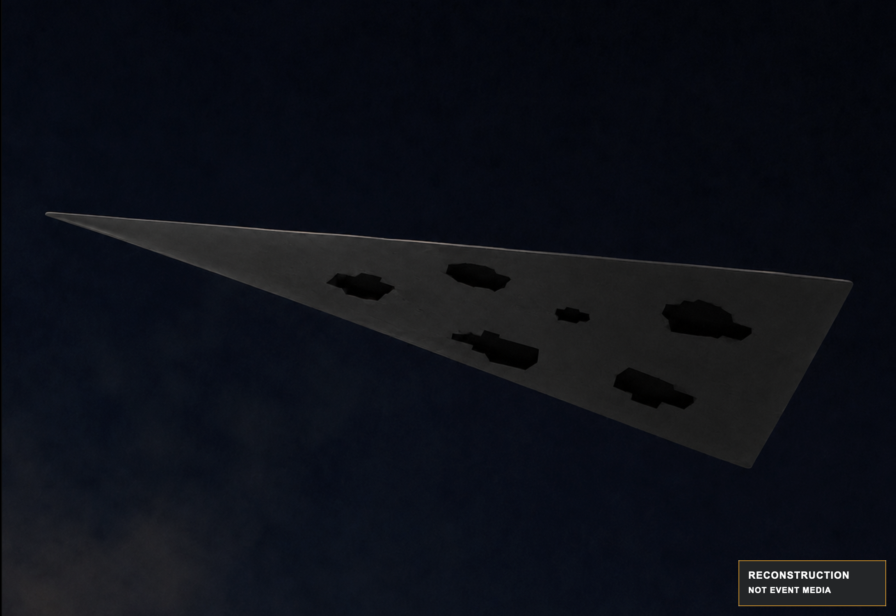
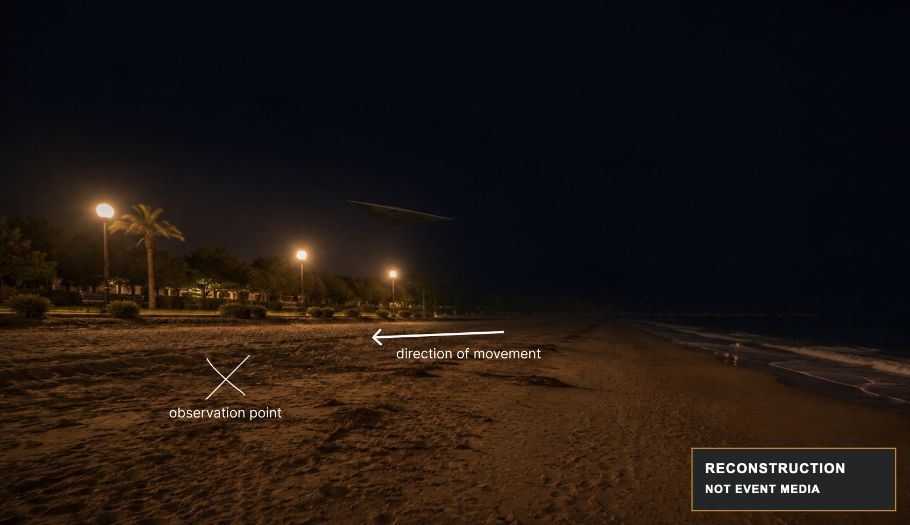
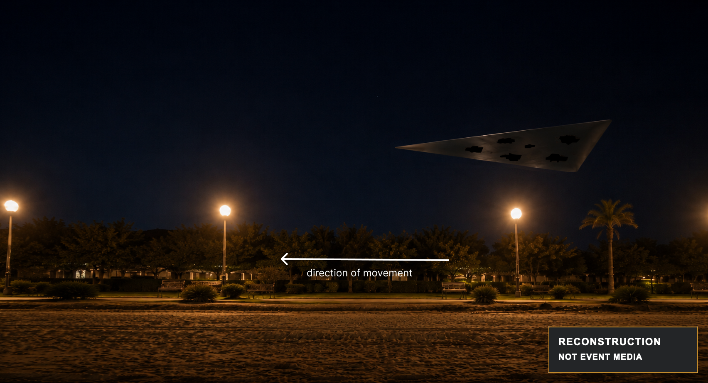
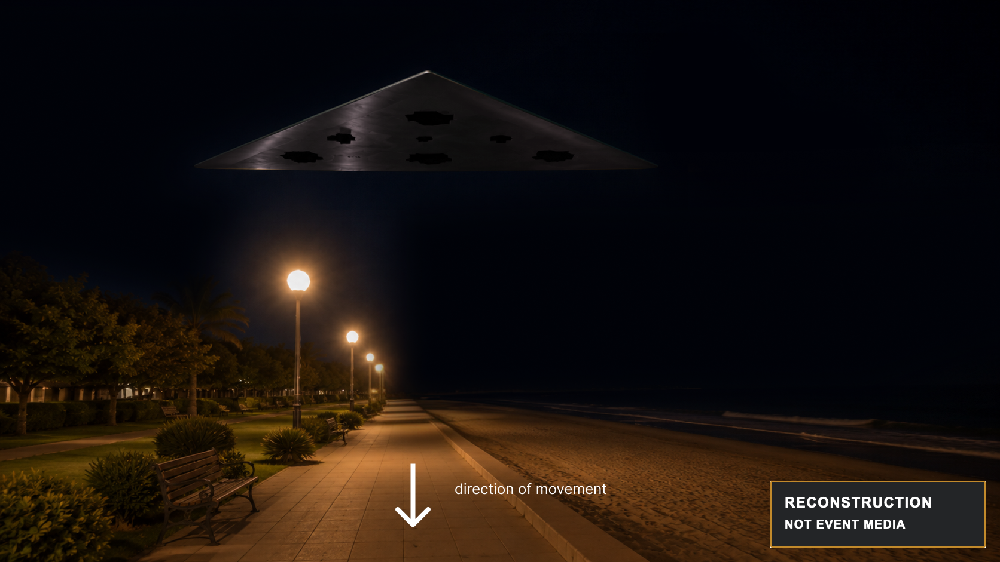
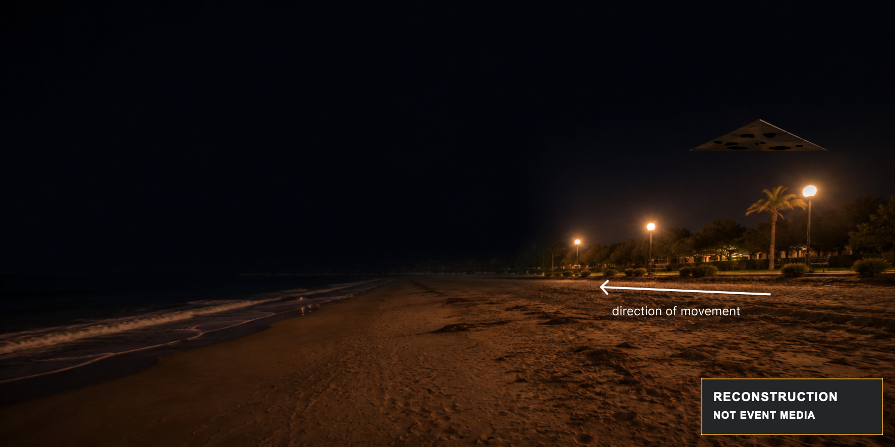

12–15 seconds in view
A recalled interval rather than a stopwatch measurement.
Witness-led UFO investigationSummer 2004 · Antalya coast
Near the Antalya coast, I saw a dark triangular object move past at close range and low altitude. I did not record it, and I do not claim to know what it was. AMT-01 is my framework for documenting the experience, reverse-engineering the reported constraints, and curating ideas that can be compared with what I remember.
This is a witness-led project, not a predetermined conclusion. Read what I saw, challenge the method, or help test an idea.
01 / The encounter
In summer 2004, I recall a dark, matte triangular form moving slowly past at close range. I later estimated that it was perhaps 15–20 metres away laterally and about 4–5 metres above the local ground or water. It remained in view for roughly 12–15 seconds. Its flat-looking underside carried several sharply bounded, irregular regions that looked completely black, with no reflection visible to me. I remember no obvious sound or visible means of propulsion.
12–15 seconds in view
A recalled interval rather than a stopwatch measurement.
15–20 metres from its path
The closest lateral distance I later estimated. It was not measured or site-calibrated.
4–5 metres above ground or water
This later visual estimate was partly informed by nearby walkway lamps. It is not a measured altitude.
No obvious sound
No sound stood out to me during the short encounter, but that does not prove silence.
Detailed appearance
This is a retrospective memory, not a measurement. “Not noticed” does not prove physical absence.

Only the broad triangular outline and the presence of irregular black regions should be read from this sketch. I later estimated roughly 5–7 regions, but their exact count, shape, size, orientation, and placement are uncertain.
I remember an elongated, flat-looking triangular underside with several irregular, completely black regions. It appeared to move steadily, with no obvious sound, lights, exhaust, or downwash. Its exact shape, size, material, and mechanism remain unknown.
Reconstruction gallery
These later illustrations are not event media, evidence, or a measured sequence. Each image is permanently marked as a reconstruction. Open any image for a larger preview. The setting, path, scale, lighting, and object geometry are approximate.

A separate illustration of the remembered observation point and direction of movement. The setting, scale, distance, and path are approximate.

A separate illustration of the form moving across the observer’s field of view. Position, height, orientation, and apparent size were not measured.

A separate, closer interpretation showing regions I remember as completely black. Exact shape, surface, proportions, number, and placement are uncertain.

A separate composition showing the form at a smaller apparent scale. It does not establish a measured disappearance point or depict an unusual disappearance effect.
02 / What it can establish
I use “UFO” because I have not identified what I saw. It describes that uncertainty. It is not a claim about extraterrestrial origin or extraordinary technology.
The case preserves my witness record and its later corrections. It does not independently prove what caused the experience.
Time, height, size, distance, and speed were not instrumentally measured and may change under different assumptions.
Environmental, perceptual, conventional, and less familiar possibilities should be tested against the same information.
03 / The framework
I want to curate an open process that preserves what I experienced, marks uncertainty clearly, and compares several explanations, including ordinary ones, under the same rules.
My wording, corrections, and uncertainties stay versioned. A remembered detail remains a report, not a measurement.
Estimates and calculations must reveal their assumptions so anyone can challenge them or try a different range.
No explanation receives special treatment. Each must be compared with the same witness record, uncertainty, and missing information.
You do not need these labels to read the case. They keep different kinds of statements separate inside the research dataset.
04 / How to help
You do not need to believe or disbelieve me. Useful contributions show their sources, assumptions, and limits.
Check sightlines, timing, apparent scale, night perception, or ordinary explanations.
A useful result:A reproducible calculation, model, or critique.
Research local weather, aviation, maritime activity, infrastructure, or comparable reports.
A useful result:A primary source with date, location, and relevance explained.
Review the schema, document a comparison case, or improve provenance and privacy safeguards.
A useful result:A traceable correction or carefully sourced case record.
See how public discussion, contributions, and future private experience sharing will work.
View the community plan05 / Community
You can read without signing in. Discord is already open for public discussion. The GitHub repository will open with the public release. Private experience intake remains closed until a separate consent and privacy process is ready.
Ask a question, challenge an assumption, share a relevant source, or develop an explanation using the published material.
Join the Discord communityDiscord invitation unavailable
Opens the public Discord server. A free Discord account is required to participate.The repository will hold the witness record, sources, calculations, open questions, dataset structure, corrections, and decision history.
Open the GitHub projectRepository not yet public
The repository link will appear here when the public release is ready.Discussion is not evidence. Material enters the project record only after its sources, rights, privacy, and reasoning are reviewed.